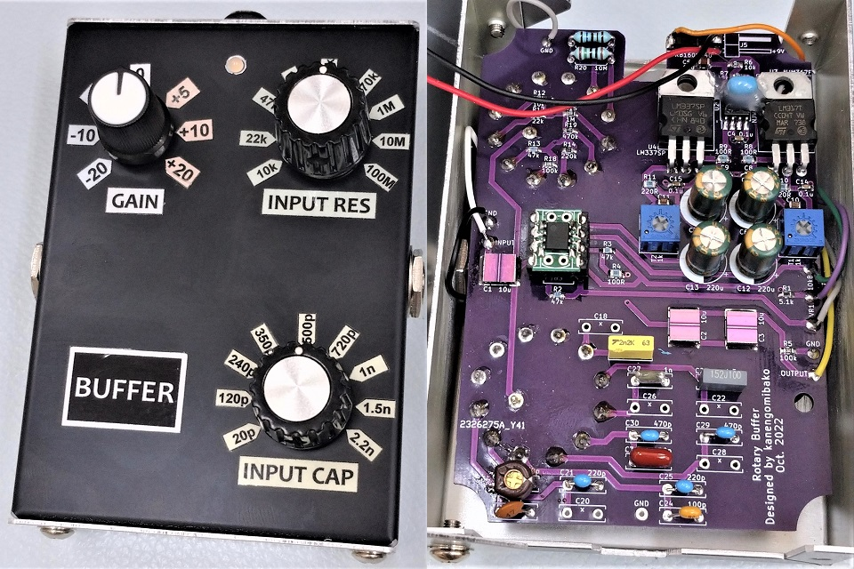
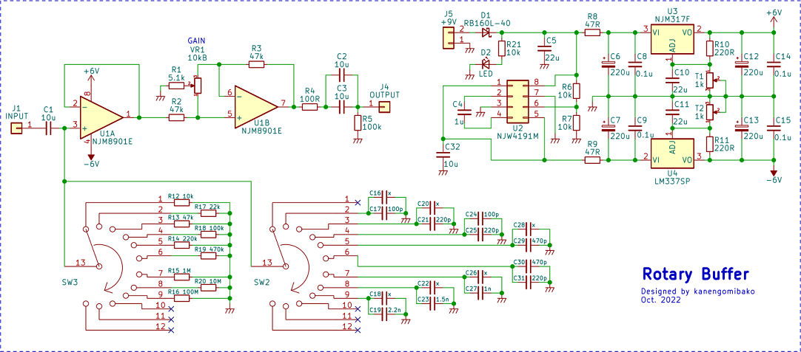

Rotary Buffer
2023年03月08日 カテゴリー：自作エフェクター（アナログ）

特性測定等の際、基本的にオーディオインターフェースUR22Cに直接接続していましたが、内部回路がわかっているバッファが今後必要だろうということで自作しておくことにしました。ピックアップの特性測定にも使えるように、ロータリースイッチで入力部の抵抗・コンデンサを切り替えられるようにしてあります。
名前は何でもよかったのですが、ロータリースイッチが特徴的なので単純に「Rotary Buffer」ということにしました。ちなみに、この語句を検索すると塗装仕上工程のバフ掛けで使うような研磨機が出てきます。
▽回路図

電源は負電圧出力チャージポンプICを使って両電源とし、ローパスフィルタとレギュレータでノイズ対策を行っています。正直なところ、音質面を考えたというよりやってみたかっただけです。両電源にすると基準電位がグラウンドになるので、倍電圧生成よりも都合がよいことが多いように思います。特に今回は入力のカップリングコンデンサC1を充電する必要がなくなるというメリットがあります。NJW4191は便利なICですが、6ピン（ON/OFF）の電圧が6Vを超えないよう注意が必要です。
音量を下げる場合には反転増幅回路の方が一般的だと思いますが、位相反転させたくなかったため非反転増幅で増幅率を1未満にできるタイプの回路としました。音量変化のカーブがやや不自然になるので、ノブの周りに-20（dB）といったシールを実測しつつ貼っています。コンデンサの容量についても実測しましたが、実際に音声信号を通した状態ではシール記載の値より20pF程度多い状態になるようです。10MΩと100MΩ抵抗はとりあえず付けたものの、ほとんど変化がないのであまり意味はありません。オペアンプNJM8901やPMLCAPは、やや高価ですが何となく安心感があるので使ってみました。音量を下げられるのは地味に有用で、思ったより活躍の場は多そうです。